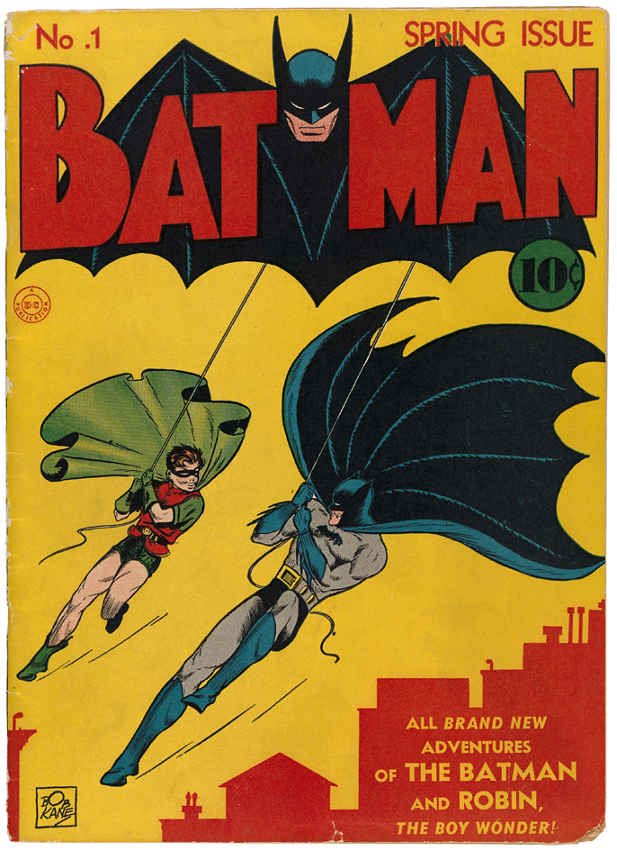
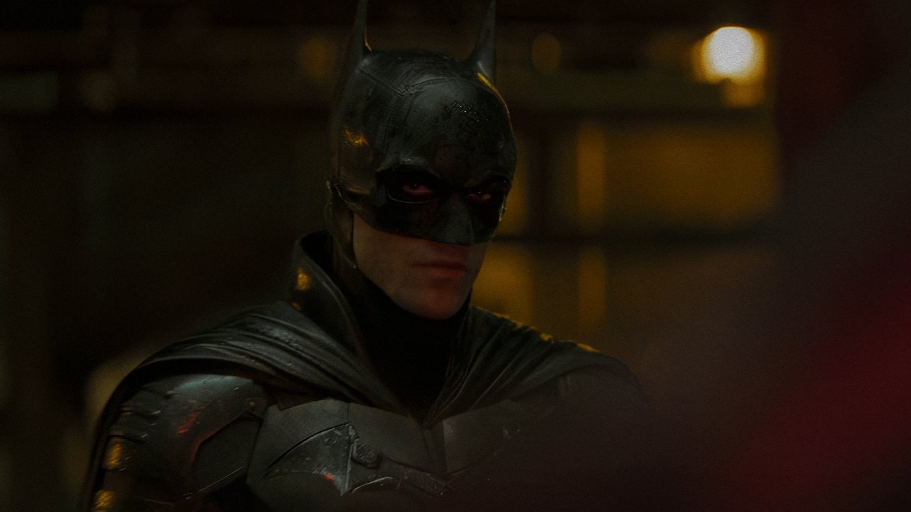
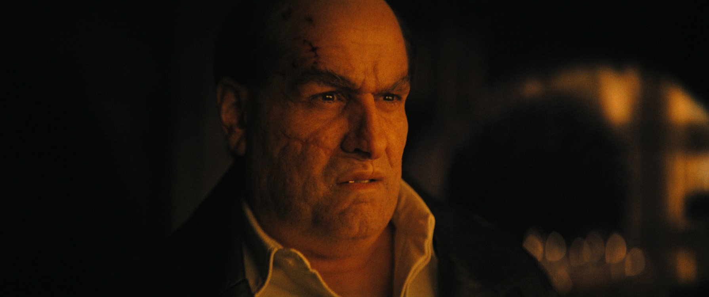
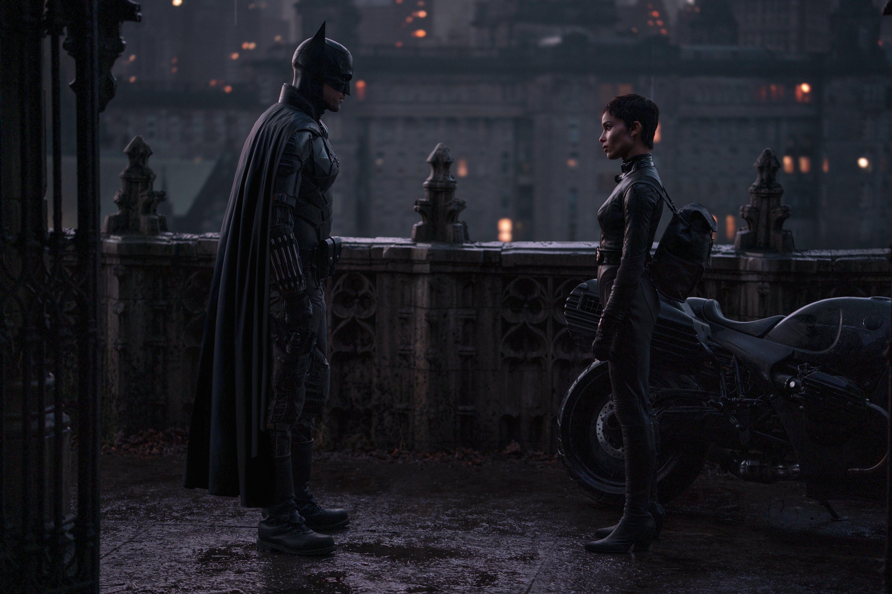

- Directed by Matt Reeves
- Starring
- Robert Patttinson
- Zoe Kravitz
- Paul Dano
- Colin Farrell
- John Turturro
- Andy Serkis
- Jeffrey Wright
I’ve always loved Batman. As a child in the 1940s I was allowed to buy a Batman Comic once a fortnight, every second Thursday [that was my father’s pay day]. I was in heaven; I would fantasize about the characters and the situations and the illustrations until the next fortnight came around. Of course, at that time, I was mainly interested in Robin. I wanted to be Batman’s sidekick and follow him and support him through all his adventures. The illustrations were amazing, by today’s standards they would be works of art.
There was a television series, I remember, and then the big motion pictures started and then Robin disappeared. I must admit, I still think there is a place for Robin in today’s genre. [I won’t get much support for that comment!]
 Robin has always been Batman's sidekick, and always should be. Unsubscribe if you disagreeHowever, I digress. I have just seen THE BATMAN, the latest in the cavalcade of movies. Now, I haven’t seen a Batman movie since Heath Ledger won his posthumous Oscar for his performance as The Joker, so I’m somewhat behind the eight ball here. I was in for a big surprise.
And BIG it is. The movie opens and the title THE BATMAN appears, it fills the screen, it seems to be having difficulty fitting into the frame it is so big. And this is the case for the next 2 hours and 56 minutes. THE BATMAN is big in every respect. And it is dark, extremely dark. Gotham City is the darkest place on earth and there is trouble in Gotham City, much more than they had in River City.
Make sure you catch this part, it's critical to the storyIt opens with a heartrending performance of ‘Ave Maria’ on the soundtrack, I think, sung by a little boy. We don’t understand the reference, but it all unfolds as we progress through the tale. It’s difficult to follow the opening sequences, the camera work is a jumble, it’s not clean or clear, we start to wonder is something wrong with the equipment. But no, the director, Matt Reeves, is painstakingly asking us to enter his world of Gotham City. A world of corruption at every level.
Then THE BATMAN appears. Here is played by Robert Pattinson. Now I’ve only seen Mr. Pattinson, once, many years ago. He would have been a teenager and he was playing a young artist at an exclusive boys’ school; I think somewhere in Spain. At this time, I didn’t think he would be cast in another role. How wrong I was. I know he became very famous after that, but I hadn‘t seen him again.
His first appearance here, is dynamic, to say the least, he is huge, as the big title suggests, and he then dominates the screen for the next 3 hours. Firstly, I thought, why do you need an actor of any stature to play a man in a rubber suit for the entire length of the film. How mistaken I was. This actor dominates from inside the costume – he exudes the strength and the charisma of the character from start to finish. [I don’t know why, but I was reminded of Marlon Brando in ‘Heart of Darkness’.] And when he appears without the costume as Bruce Wayne, he is equally as good. Make no mistake about it, this is a stellar performance.
 Batman rocking that Just-Stepped-Out-Of-The-Shower look.Gotham City is dark, it is dark politically, legally and morally. Corruption abounds. There is never any light in Gotham City, until right at the end the dawn starts to break. Is this symbolic that THE BATMAN has cleaned up the city somewhat? I think not!
The protagonists have a great time trying to destroy THE BATMAN and some wonderful performances ensue. Colin Farrell, a favourite of mine, is unrecognizable as the Penguin, but is spot on, so are Paul Dano, John Turturro [I remember a time when he was in every film I went to], Jeffrey Wright, with special mention for Andy Serkis as Alfred, Bruce Wayne’s butler.
 Hey, isn't that the ridiculously good looking guy from 'In Bruge' and 'Seven Psychopaths'?On the distaff side we have a lovely performance from Zoe Kravitz, as Catwoman. She and BATMAN share a tender moment at the end of their adventures and then they part on their respective motorcycles. Catwoman rides to the left and THE BATMAN exits to the right. Which is fitting.
 What, no basketball?!? Worst. Catwoman. Ever.It seems Gotham City’s corruption goes back many years, to Bruce Wayne’s father, in fact. Even then politicians were promising things they couldn’t or wouldn’t deliver. [Does this sound familiar?]
So many people have been impacted by these corrupt activities that the dark side of the city seizes the opportunity to take over completely, which Paul Dano, as the Riddler almost does. Thus, causing THE BATMAN to intervene to save his town.
Special effects play a huge part in this production. However, unlike my recent experience with Mr. Brannagh’s epic, on this occasion, every bell and whistle are spot on.
To sum up a totally absorbing and satisfactory visit of 3 hours at the cinema. I thought I’d go to sleep when faced with this herculean task, but I didn’t nod off at any point. Full marks to all involved, particularly the director, Matt Reeves, but especially to the STAR, THE BATMAN, Robert Pattinson.
As an afterthought, followers [do I have any followers?] will be interested to know I saw this movie at the 3 Star restaurant, once again. This time I fell down the stairs, on the way in and had trouble scrabbling to my feet. I was seated in the front row, therefore, I had plenty of light on my food. I didn’t spill anything this time.
Star Rating: 5/5 [a must see] [a must see]